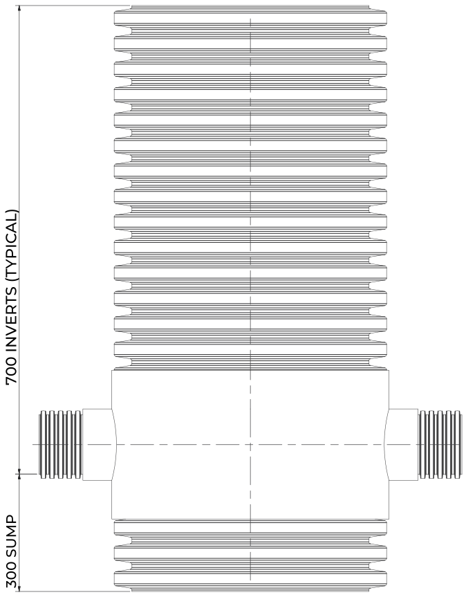
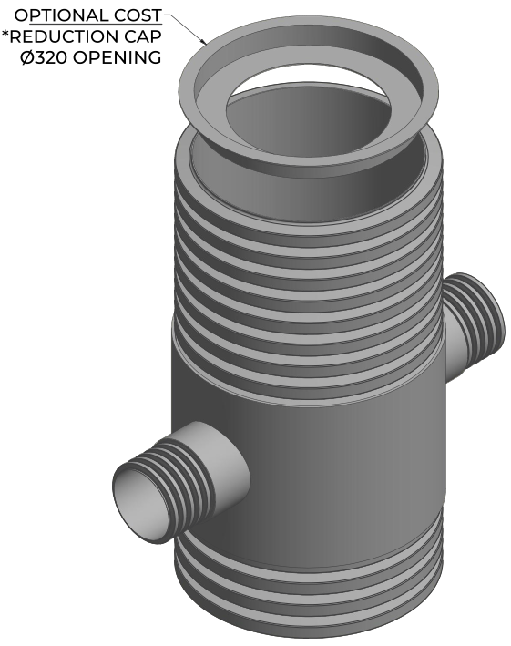
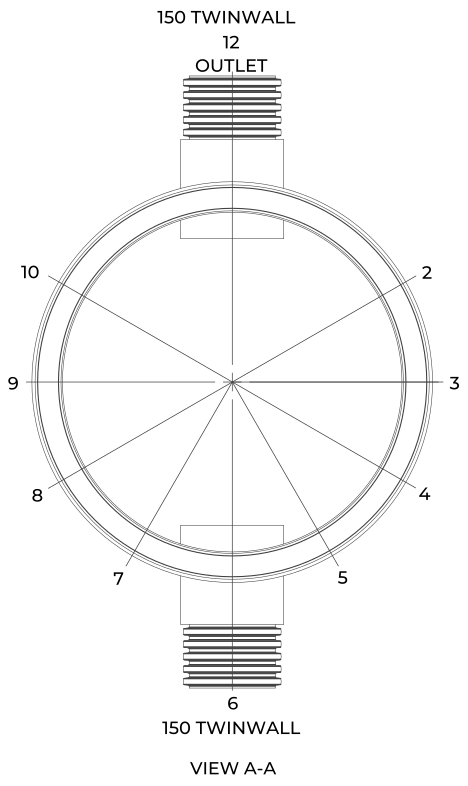
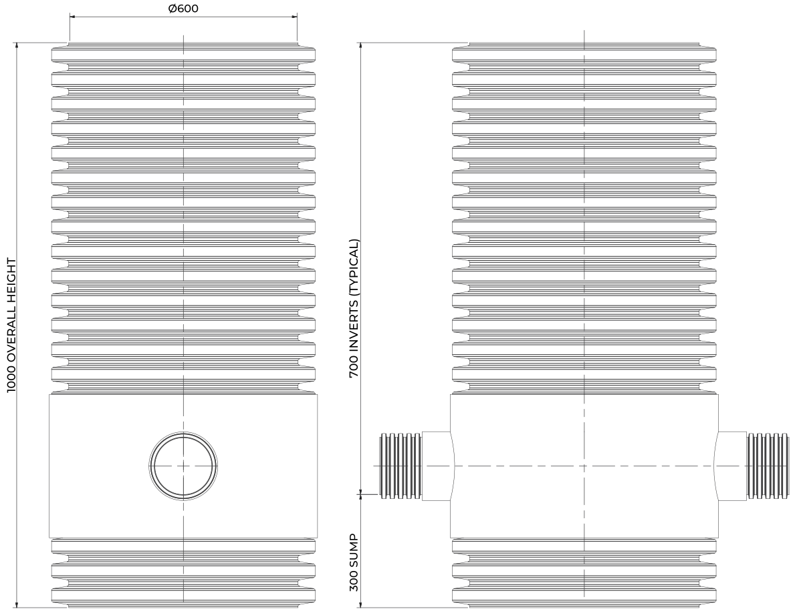
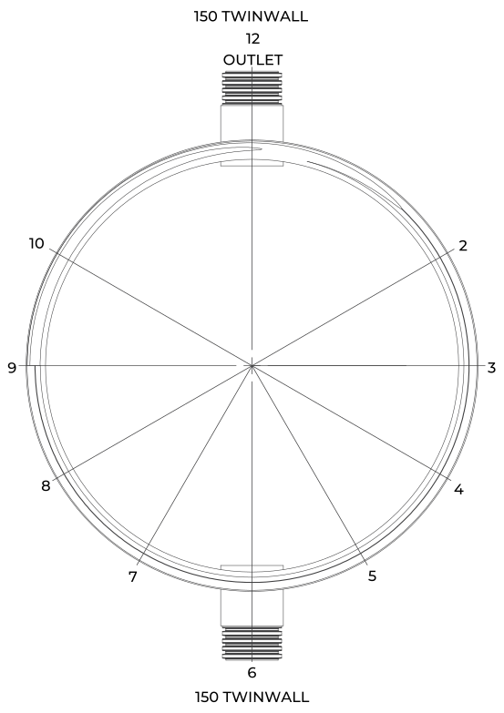
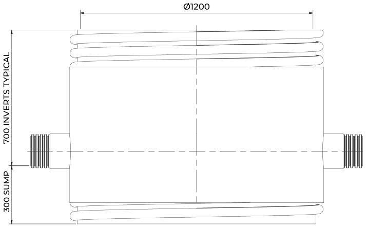
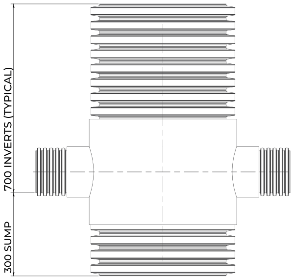
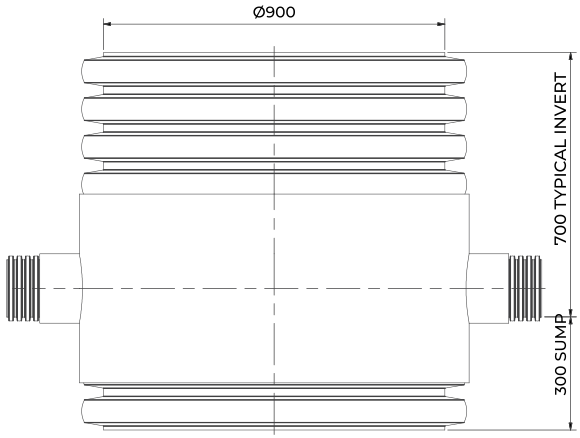
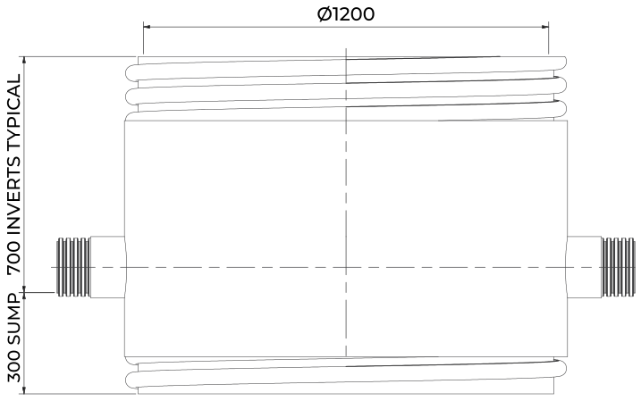

RHINO SERDS, the Advanced Plus 600 Series, is a range of catch-pit chambers engineered for the efficient catchment and removal of silt and debris from impermeable or hard surface areas such as paths, driveways, patios, roofs, car parks, roads and highways. A primary and secondary filtration system improves downstream water quality and reduces the risk of flooding.
Integrated into a Sustainable Drainage System, SERDS supports compliance with regulatory requirements for flood mitigation and water treatment. Six chamber diameters, from 450 to 1200 mm, cover small residential plots through to highway and commercial schemes.
SERDS450Ø450 mm
SERDS600Ø600 mm
SERDS750Ø750 mm
SERDS900Ø900 mm
SERDS1050Ø1050 mm
SERDS1200Ø1200 mm
How it works
Stormwater flows into the chamber, where the primary filtration catches larger particles and the secondary filtration captures finer sediments. Solids settle out in the sump below the pipe inverts before filtered water is discharged into the drainage system, reducing the load on downstream infrastructure.
Design compliance
EN 13598 Part 2 (2009) thermoplastic inspection chambers
Design and Construction Guidance (DCG)
Sewers for Adoption 7th Edition (SfA7)
Building Regulations Part H1
Adoptable and non-adoptable applications

Ø600 chamber, side elevation. Dimensions in mm from drawing SERPT600150-1. Not to scale
Features & benefits
Primary and secondary filtration
Sump collects settled silt and debris
Multiple inlet and outlet configurations
Standard or bespoke sump depths
Anti-fracture thermoformed base
Light-duty to full-traffic loading
Prefabricated one-piece unit
Chemical and corrosion resistant
Chamber options
Sump depths are standard or made to suit the project. Inlet orientation depends on the chosen pipework configuration and diameter. An optional reduction cap with a Ø320 mm opening is shown on the 450 and 600 drawings.
Installation
The prefabricated one-piece design saves significant time compared with traditional in-situ construction. Bed and surround to suit the loading and ground conditions, and have the installation signed off by a suitably qualified professional.

Ø450 chamber with optional reduction cap.
Specification
Sizes
SERDS450, 600, 750, 900, 1050, 1200 (Ø450 to 1200 mm)
Material
HDPE, extruded and thermoformed
Filtration
Primary and secondary filtration systems
Flow capacity
Dependent on chamber size and configuration
Load rating
Light-duty to full-traffic applications
Depth
Adoptable up to 2000 mm, non-adoptable up to 3000 mm to pipe soffit
Access
Max 350 mm opening where pipework is over 1 m deep
01 / 04
RHINO SERDS
General arrangement - Ø600 chamber
Plan view A-A | outlet at 12, inlet at 6

SERPT600150-1
Chamber
Ø600 mm
Overall height
1000 mm
Inlet
150 twinwall at 6 o'clock
Outlet
150 twinwall at 12 o'clock
Inverts
700 mm below top (typical)
Sump
300 mm below the inverts
Access
Optional reduction cap, Ø320 mm opening
Drawing reference from the SuDS Enviro drawing pack for the Ø600 catch-pit body.
Front elevation and side elevation

Reading the drawing
Drawing SERPT600150-1 shows a Ø600 chamber with 150 mm twinwall inlet and outlet and a 1 m overall height. Invert levels are measured down from the top of the chamber.
Both pipes sit at the same 700 mm typical invert, leaving a 300 mm sump below them where solids settle out.
Inlet orientation depends on the chosen pipework configuration and diameter. Sump depth can be increased to suit the catchment and maintenance cycle.
Not to scale Reproduced from the SuDS Enviro drawing pack for illustration. Dimensions in millimetres. Confirm project dimensions against the order drawing.
02 / 04
RHINO SERDS
How it works - filtration, settlement, maintenance
1
Primary filtration
Stormwater from paths, roofs, car parks and highways flows into the chamber. The primary filtration catches the larger particles and debris before they can travel on into the drainage network.
2
Secondary filtration and settlement
The secondary filtration captures finer sediments. Solids settle out in the sump below the pipe inverts, and filtered water is discharged into the drainage system, preventing blockages in pipes and manholes.
3
Minimal maintenance
The system is designed for efficient stormwater management with minimal maintenance. Custom sump depths extend the interval between cleans on catchments with a heavy silt load.
4
Built for the long term
A thermoformed base gives structural strength and reduces the risk of fracture during installation and long-term use. HDPE gives broad resistance to hydrogen sulphide, corrosive acids and bases.

Ø1200 chamber plan. Drawing SERPT1200150-1. Not to scale
Ø1200 chamber | side elevation

The large-diameter body keeps the same 700 mm typical inverts and 300 mm sump as the Ø600 unit on the drawn 1 m configuration.
Applications
Paths and walkways
Driveways and patios
Roofs
Car parks
Roads and highways
Commercial and industrial areas
For projects that need effective sediment and debris control, improved water quality and sustainable stormwater management.
03 / 04
RHINO SERDS
Size range - SERDS450 to SERDS1200

Ø450 - drawing SERPT450150-1

Ø900 - drawing SERPT900150-1

Ø1200 - drawing SERPT1200150-1
Not to scale Elevations are shown at different scales so each fits the column. Each is one drawn configuration; overall height, pipework, sump depth and inlet positions are made to order.
Code
Chamber
Drawn pipework
Overall height
Inverts (typical)
Sump
Drawing
SERDS450
Ø450 mm
150 twinwall
1000 mm
700 mm
300 mm
SERPT450150-1
SERDS600
Ø600 mm
150 twinwall
1000 mm
700 mm
300 mm
SERPT600150-1
SERDS750
Ø750 mm
150 twinwall
1000 mm
700 mm
300 mm
SERPT750150-1
SERDS900
Ø900 mm
150 twinwall
1000 mm
700 mm
300 mm
SERPT900150-1
SERDS1050
Ø1050 mm
150 twinwall
1000 mm
700 mm
300 mm
SERPT1050150-1
SERDS1200
Ø1200 mm
150 twinwall
1000 mm
700 mm
300 mm
SERPT1200150-1
Invert levels are measured down from the top of the chamber. Drawings are catch-pit body references from the SuDS Enviro drawing pack.
Installation
Bed and surround to suit the loading class and ground conditions
Allow for variable groundwater levels
Set inlet and outlet to the design inverts
Where pipework is over 1 m deep, fit restricted access of 350 mm maximum
Have the installation signed off by a suitably qualified professional
Compliance
EN 13598-2 (2009)
DCG, adoptable and non-adoptable
SfA7 (Sewers for Adoption)
Building Regulations Part H1
DCG restricted access: max 350 mm opening over 1 m depth
Specify RHINO SERDS
Advanced Plus 600 Series. Contact our technical team for project-specific configuration and sump sizing.